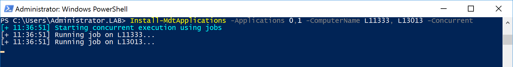

Current Version 0.19. Written by Joël Ammann.
To install Powershell RIM, download both the Manifest (rim.psd1) and the Module File (rim.psm1). Use: Import-Module rim.psd1
to import the module into Powershell.
Use Set-MdtDeploymentShare -DeploymentShare "\\DEPLOYMENTSERVER\DEPLOYMENTSHARE$"
to define your default Deployment Share.
Powershell RIM integrates into MDT (Microsoft Deployment Toolkit) and uses a common application database. The Get-MdtApplications Cmdlet can be used to list all exising applications inside a Deployment Share. For more information about this Cmdlet, use:Get-Help Get-MdtApplications
For a nice overview of all your applications (as shown in the screenshot below), use:
Get-MdtApplications | Sort-Object ApplicationName | Format-Table
Use the Install-MdtApplications Cmdlet to install one or many applications to one or multiple Windows Clients. For more information about this Cmdlet, use:Get-Help Install-MdtApplications
Use the -Concurrent switch to install applications on multiple devices simultaniously.
If you found a bug or have an idea to improve Powershell RIM, I am happy to hear from you: joel@simplywing.ch